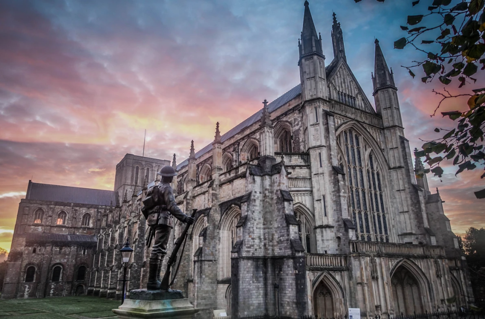
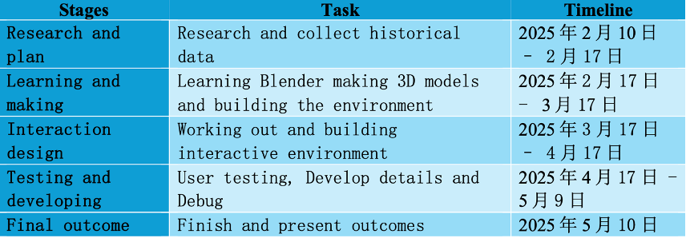

Project — Overview
I am deeply interested in VR, interactive storytelling, and the digital preservation of cultural heritage. VR not only presents technical challenges but also expands the ways of telling historical stories, making them more vivid and appealing. This project is an exploration that combines 3D modelling and user experience design. I hope to make history more intuitive and perceptible through technological means and enhance the immersion and engagement of history education.

Project Concept
The goal of this project is to create an interactive virtual reality (VR) experience that allows users to explore the historical evolution of Winchester Cathedral. Using VR technology, 3D modeling, and interactive storytelling, users will immerse themselves in different historical periods and witness how the cathedral’s architecture has transformed over time. By selecting key historical phases, such as its medieval foundation, Gothic expansion, and modern restoration, the experience will provide a comprehensive view of the cathedral’s dynamic changes. Users will be able to navigate freely within the virtual space, interact with historical information points, and engage in special activities that enhance the learning experience.
Key Features
- Historical Time Travel: Users can travel through different eras, witnessing the cathedral’s evolution. They will see changes in architectural styles, construction materials, and structural modifications over the centuries.
- Immersive 3D Modeling: High-quality 3D models will accurately represent Winchester Cathedral’s architectural details, ensuring historical accuracy and an authentic visual experience.
- Interactive Storytelling: Embedded historical narratives will provide context and significance behind each architectural transformation. Users can engage with historical events, notable figures, and cultural shifts that influenced the cathedral’s development.
- Environmental Interaction: Special features such as lighting adjustments will allow users to experience different time-of-day atmospheres, from candle-lit medieval interiors to the grandeur of sunlight streaming through Gothic stained glass windows.
- Barrier-Free Design: Accessibility features will ensure that individuals with mobility impairments can fully engage with the virtual environment. Customisable navigation options, subtitles, and alternative interaction methods will be included to accommodate diverse users.
Project Goals
The primary objective is to enhance history education by making it more engaging, interactive, and accessible. Traditional learning methods often rely on static text and images, which can make historical subjects less immersive. Through VR storytelling and interactive elements, this project aims to transform history education by allowing users to experience history firsthand.
Additionally, this project contributes to the digital preservation of cultural heritage. By accurately reconstructing Winchester Cathedral in VR, it helps safeguard its history for future generations. This aligns with the growing field of digital humanities, where technology and historical research intersect to create innovative educational tools.
Furthermore, by making the experience available online, a wider audience, including those who may never have the opportunity to visit Winchester Cathedral in person, can explore its history. This broad accessibility ensures that historical knowledge is preserved and shared beyond geographical limitations.
Why Combine VR with Historical Narrative?
With storytelling at the core, I aim to explore how to use VR technology to tell the story of the evolution of historical buildings without sacrificing accuracy due to technical reasons. Traditional historical exhibitions often rely on static pictures, books, or museum displays, while VR can provide an immersive experience. Users can not only see the past architectural forms but also feel the historical changes firsthand. Through time-axis interaction and story-driven methods, users can freely shuttle between different historical periods and experience how the building has changed over time.
Why Choose Winchester Cathedral?
Winchester Cathedral is one of the oldest and most important buildings in the UK. Its architectural style and function have undergone huge changes in different periods. From the initial wooden structure to the stone reconstruction and then to the Gothic expansion, each stage carries rich historical stories. With the help of VR technology, users can not only visualize these changes but also gain an in-depth understanding of the social, cultural, and technological development behind the architecture through immersive narration.
How Does VR Enhance Historical Narrative?
This project adopts the combination of VR and storytelling, making history not just exist in books and pictures but become an immersive experience. VR can enhance interactivity, allowing users to choose different historical periods and explore how the building has evolved over time. It can also create a sense of immersion. Using 3D modeling in real-scale, dynamic light and shadow, and audio effects can make users “travel” back to the past. Finally, through rich narrative methods such as virtual tours, character perspectives, or environmental audio, users can more deeply understand the historical background of the building.
Key Technologies and Media Formats
I will use different technologies to build an immersive VR experience and combine multiple media formats to enhance user interactivity. To ensure the accurate restoration of historical buildings and immersive interactions, we have selected the following key technologies. First, Unreal Engine or Unity will be used to build the VR environment and implement interactive functions, allowing users to freely explore Winchester Cathedral. Second, Blender and RealityCapture will be used for 3D scanning and modeling to ensure that the details of the building structure are restored with high precision. Finally, Meta Quest will provide hardware support, enabling users to obtain a more realistic immersive experience in the virtual environment.
In terms of media formats, I will adopt 360° VR environments, allowing users to freely explore the virtual reproduction of the cathedral, and provide 3D interactive models, enabling users to zoom in and view the details of specific architectural elements.
The customised theme of this project revolves around “the evolution of architecture over time”, focusing on demonstrating the structural, stylistic, and functional changes of Winchester Cathedral in different historical periods. To enhance the practical application value of the project, we have identified five main use cases. First, in education, this VR experience can provide an interactive learning tool for students majoring in history and architecture, enabling them to more intuitively understand the evolution of architecture. Second, in the museum and tourism fields, VR can enhance the visiting experience of Winchester Cathedral and local museums, allowing tourists to gain a richer historical perception. Third, academic research will benefit from the accurate historical reconstruction of this project, providing reliable reference data for architectural research. In addition, in terms of cultural heritage protection, this project provides a permanent record of different historical stages of the cathedral through 3D modeling and digital archiving technology. Finally, accessible access is one of the important goals of this project, enabling users with mobility impairments to explore and experience the historical charm of the cathedral through VR.
Here is the Timeline chart
